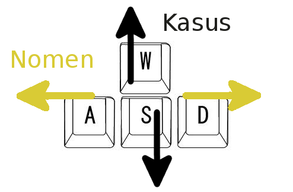

Bestimmen Sie den Kasus der umrandeten Wörter. Mit A und D auf der Tastatur steuern sie die Auswahl der Wörter, mit W und S die Auswahl des Kasus. Drücken Sie Leertaste, um den Kasus zuzuweisen.
Nominativ Genitiv Dativ Akkusativ Lokativ Instrumental